Informații generale
Marea Neagră este o mare intercontinentală situată între Europa și Asia, având o biodiversitate unică și un ecosistem fascinant. Cu o suprafață de aproximativ 436.000 km² și o adâncime maximă de 2.212 metri, această mare este conectată la Oceanul Planetar prin strâmtorile Bosfor și Dardanele.
Apele sale găzduiesc numeroase specii de pești, mamifere marine și organisme acvatice, precum delfini, sturioni și alge diverse. Totuși, Marea Neagră se confruntă cu provocări ecologice majore, cum ar fi poluarea și pescuitul excesiv, ceea ce face necesare măsuri de protecție și conservare.
Explorează acest site pentru a descoperi mai multe despre fascinanta viață marină a Mării Negre, speciile unice pe care le adăpostește și eforturile depuse pentru protejarea acestui ecosistem special!
Apele sale găzduiesc numeroase specii de pești, mamifere marine și organisme acvatice, precum delfini, sturioni și alge diverse. Totuși, Marea Neagră se confruntă cu provocări ecologice majore, cum ar fi poluarea și pescuitul excesiv, ceea ce face necesare măsuri de protecție și conservare.
Explorează acest site pentru a descoperi mai multe despre fascinanta viață marină a Mării Negre, speciile unice pe care le adăpostește și eforturile depuse pentru protejarea acestui ecosistem special!
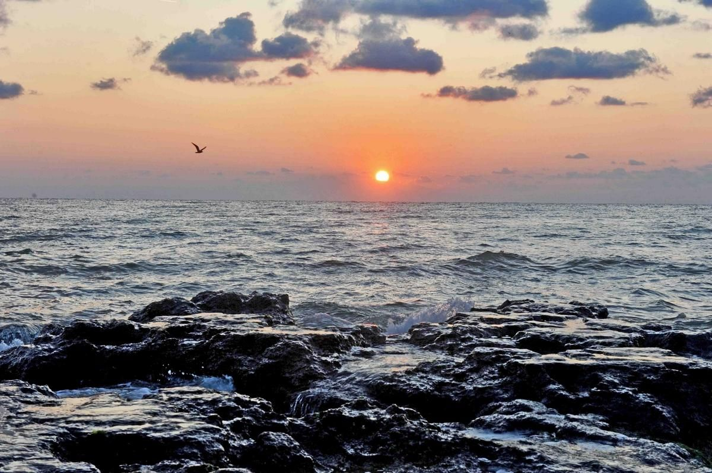
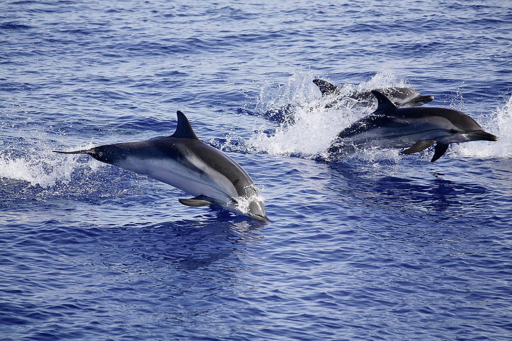
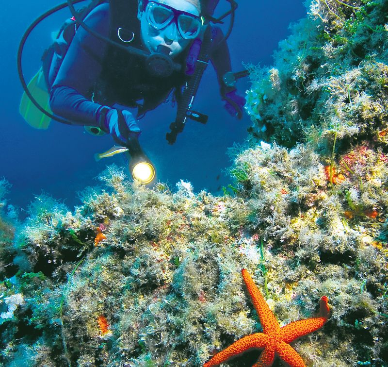
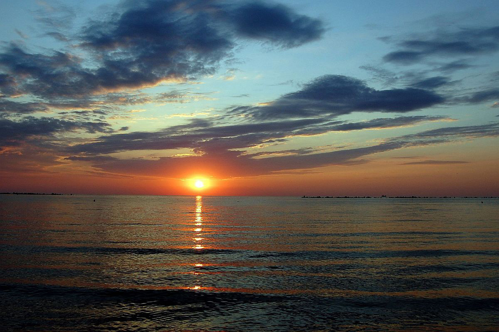
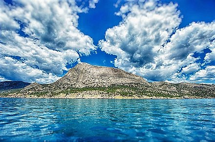
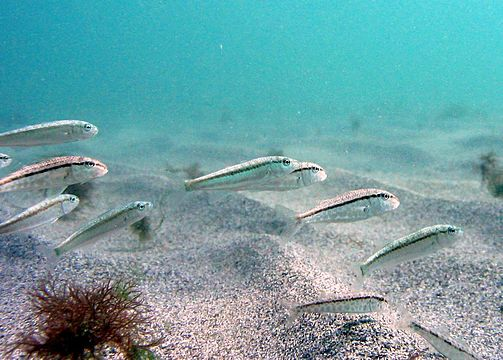
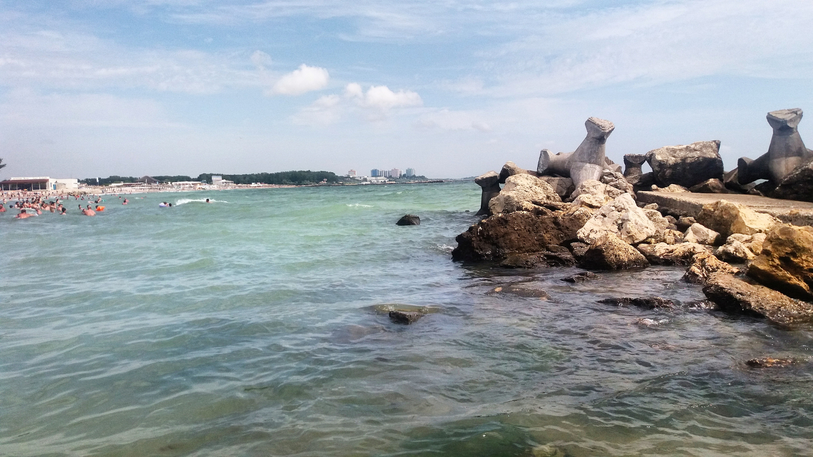
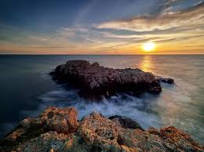
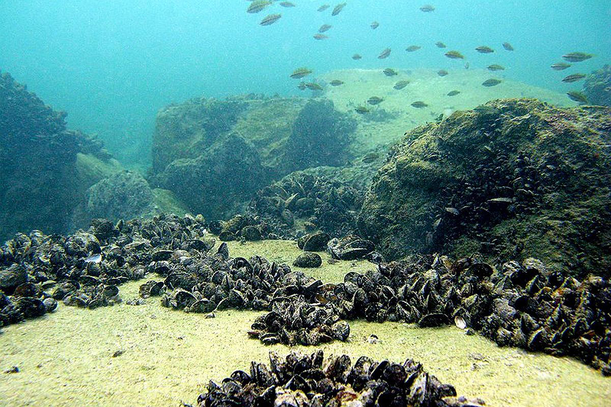
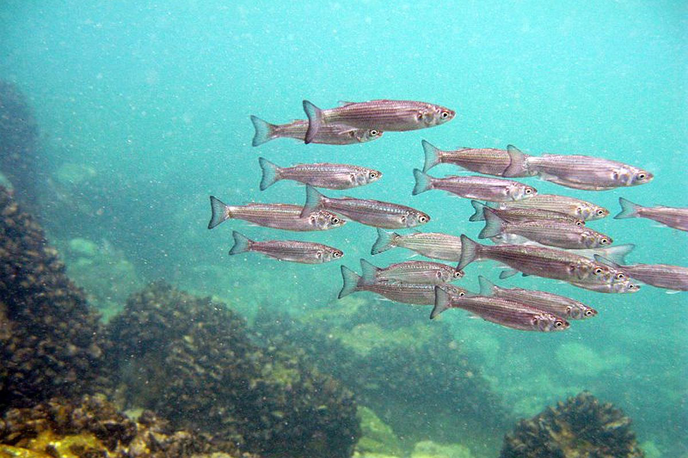
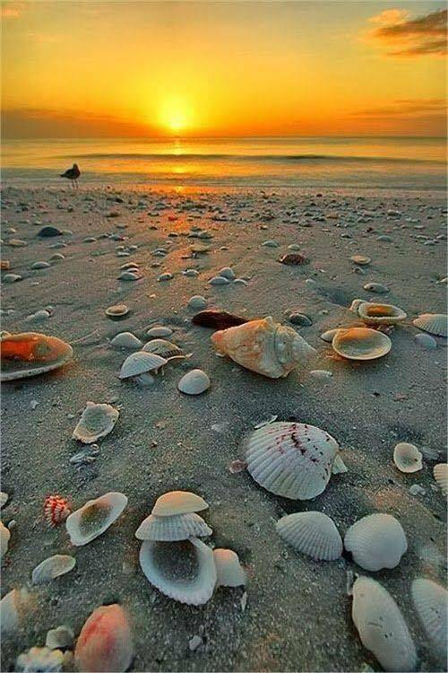
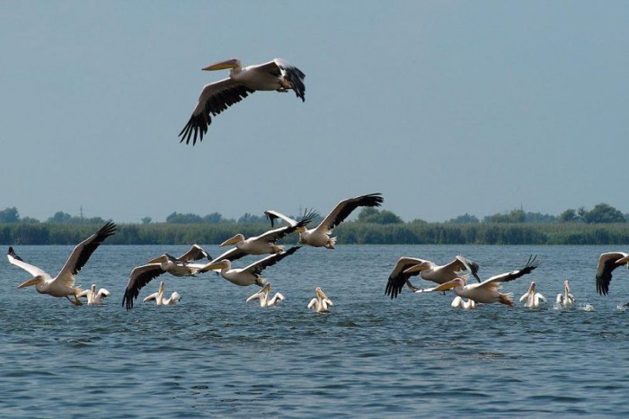
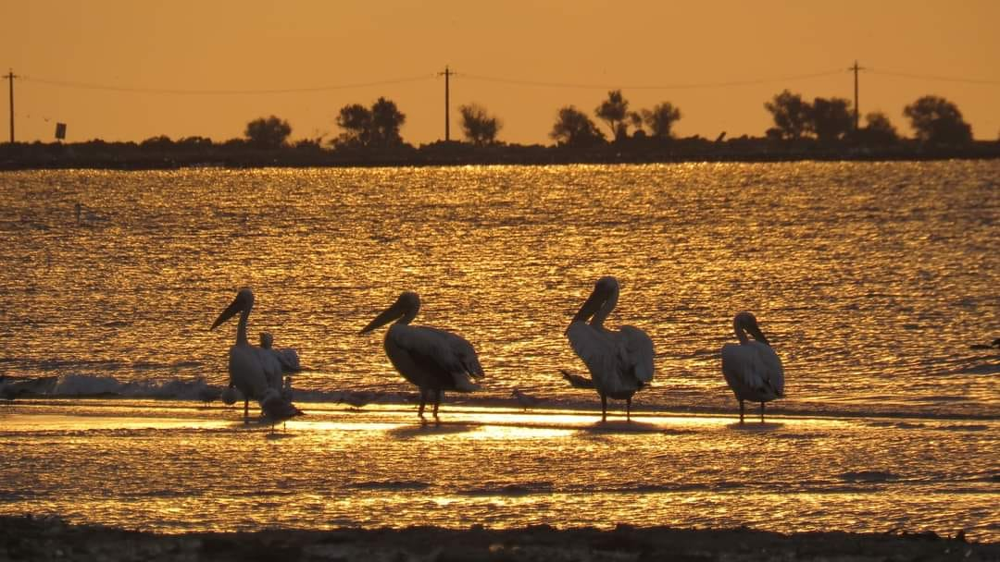